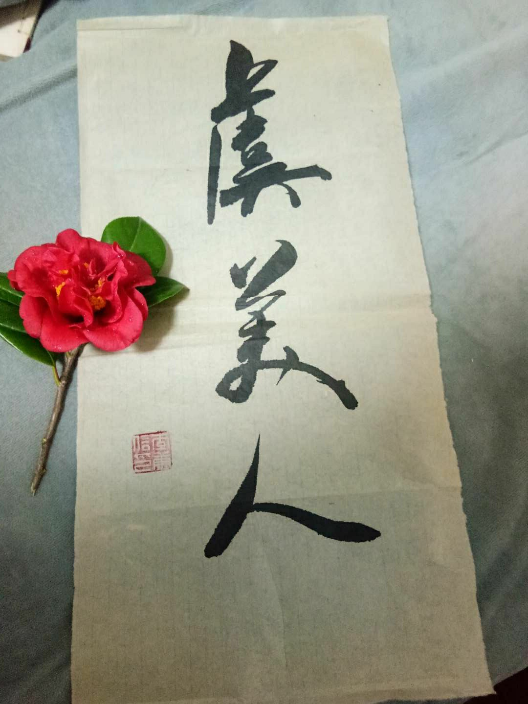

写一点关于我和瑶瑶的小故事😋
全文毫无文笔可言，只写想到的 😆
相遇
2017年夏天的一次聚会见到了这个可爱的女孩子，她叫瑶瑶。长相虽然算不上惊艳，但是给我一种很舒服很顺眼的感觉，后来也偶尔间听到几个长辈说这个女孩子长得不错，笑起来很好看，嗯~和我的感觉一致。她是温医毕业来龙湾工作的，感谢。
她做了自我介绍：
大家好我是虞瑶瑶姊妹;
虞就是那个虞美人的虞;（呵呵，居然说自己是虞美人）
现在在人民医院上班;
相识
同样是一次聚会，在七甲。这个女孩子也来参加了，在中间休息的时候。我对瑶瑶进行了一次对(da)话(shan)。具体内容忘了，说个大概情形:
Boy: 瑶瑶，你在人民医院上班吧。我叫李康 blabla;
Girl: 咦我们认识吗你怎么知道我名字 blabla;
B: 上次在那里聚会我也在的，你做了自我介绍！
G: 哦这样我没看到你耶;
B：hhh;
G: 所以你在哪里上班;
B: 高新园区，就是文昌路那里的;
G: 哦所以是哪里;
B: =。=
好的结束了这个愉(gan)快(ga)的对话。这样算是认识了吧，奇怪怎么忘了要微信。不过没关系，回去的时候，我睿智的眼睛看到了瑶瑶坐上了学全家的车。所以我进行了一次严密的推理：因为瑶瑶坐在学全家的车上 + 并且我有学全的微信 => 那么我就可以叫学全把瑶瑶的微信给我了
果然一切都在我的计算中，我成功地获得了瑶瑶的微信。在这里感谢一下周学全老弟的助力。
那么既然要到了微信，当然要马上进行一次尬聊了：
B: 你好瑶瑶，我是李康
G: lycon，这个昵称好蠢哦(虽然没说蠢但是大概是这个意思)😂
B: 强行翻译😂
之后忘了聊些啥了,hh
相知
可能因为我们都具备一种别样的尬聊本领，所以我们拥有了对方的微信之后就进行了多次尬聊。
其实我也是第一次碰到一个这么喜欢使用😂这个表情的人，这个人真逗三句话不离😂。如果她一直😂我不😂的话不是显得她很傻，渐渐地，我也学会了用😂~~~~
- 我也忘了都聊了些什么，但是没有营养的内容居多。
- 虽然没有营养的内容居多，但是我们依然渐渐了解熟悉彼此。
有时候也会开启深夜畅聊模式，聊到深夜2点，话题也变得深入。当然，两个人开始出现深入的话题之后，也意味着两个人的关系有了进一步的发展，这点是没错的。
之后，就是各式各样的聊天话题，各式各样的聚会，各式各样的活动。并没有产生想象中的羁绊，大家一起建设和谐社会。借用论语里的一句话：郁郁乎文哉。
暧昧
也不知何时，“友情以上，恋人未满”。
这里留着以后补充吧 O(∩_∩)O
相恋
通常来讲，暧昧和相恋之间没有明确的界限。
但是总得给予确定关系一个明确的时间。仪式感大概就是这个意思。
似乎我们谈论这个话题有一段时间了：我们在一起还有什么阻碍吗？她找对象首先男方得答应一个要求，对有些家庭算是过分的要求，但是对我们家以及我对我爸的了解，大概是算不上什么过分的要求的。同时她也一直不希望我询问我家的意见（万一我爸不同意，我们就可以从暧昧变回解放前了呵呵）。但是喜欢快刀斩乱麻的我，还是在饭桌上提了这件事。
算出乎意料吗？不出所料的是我爸答应了这个条件，出乎意料的是我爸居然如此爽快地答应了…
其实“一切都在我的计算之中”，我爱说这句话不是凭空而来的(自恋的我)。
那天本不是特殊的一天，像往常一样约她出来。她坐在副驾，我再次提起这件事:
B: 我爸答应了，开心吗?!~
G: 开心~~~，不敢相信这么顺利。。
B: 你以为是演电视剧吗，重重困难什么的😂
她的脸上泛起了熟悉的笑容，但是又多了一丝缺席许久的轻松愉快，是我喜欢的样子。
B: 做我女朋友好吗?
G: 啊???😂 女孩子不能这么好追
B: (看来我仍然少了一些仪式感，但是提问了总得有个回答吧)…(然后说了一堆废话)
G: (开始转移话题)
这让我知道一个女孩子在把自己交托的时候永远会由于各种原因缺乏安全感。
“安全感”，这个老生常谈的话题，如何给一个女生安全感？是强壮的身躯？还是像大叔一般的宠溺？是承诺和陪伴？是物质的还是精神上的？是全方位碾压女生的聪明和能力吗？
我也不知道，但是我努力让自己成为一个能让女孩子感受到安全感的人吧，尽管觉得自己做得并不好。
B: (又扯回了话题)
G: 那好吧~
虽然只是得到这个勉强的回答，但是还是很开心。其实很多你以为满有神圣感的场景，亲身触碰时会发现和想象的相去甚远😄
好了又到了肚子饿的时间了，点一份外卖吃吧；趁她去拿外卖的时间，给她摘了一朵花;
路边的花开得很惊艳，仿佛是为我今天的表演准备的。
B: 送你一朵花
G: 你这个人~ 幼稚，破坏市容市貌！
B: (得到这个反应让我猝不及防，原来女孩子收到花会这么说啊哈哈哈，因缺思厅) 喜欢吗？
G: 不过这朵花好好看哦，喜欢~
喂完外卖，送她回宿舍，送给她几天前写好的毛笔字(原来学了几年的毛笔，最终是这个用处😆)
附上一张图：写的字和摘的花，很搭。
“大家好，我叫虞瑶瑶，虞美人的虞”

哦忘了说了，那是 2019年1月9日
G: 今天是幸福的瑶瑶;
B: 今天也是幸福的李康.